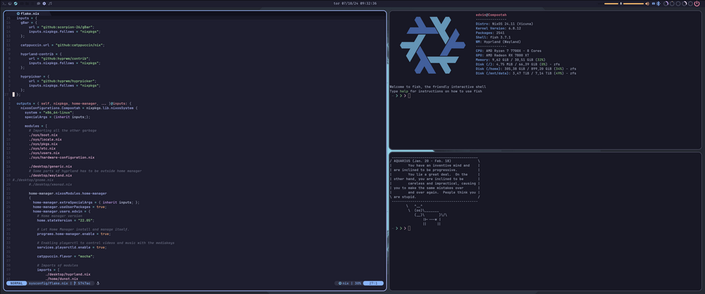

What I like to use and some reasons
Just going to document my current setup for no particular reason.Distro
Might be important to state why I use linux but it boils down to a couple of points.
- Just generally spite for the tech companies behind mac and windows and how they make money. The way that Apple and Microsoft treat their customers make me genuinely bevive that they hate them. Not like I expected anything more from a publicly traded company but maybe operatingsystems and corporations are just doomed to mix into the most vile tasting soup no matter what. The trade off between principle and practicality should be heavily tilted towards principle for any self respecting individual but who am I to judge all the mac soyboys.
- Scratches some spot for me about tinkering with computers when you're able to replace literally any component of the system, can't get this with windows or mac.
- Tiling window managers, they are the saviour for my desktop. I can't stand people with 50 differently sized windows floating over each other in different arrangements that they drag around to find chrome in the bottom.
Currently using NixOS. Now I've forgotten how to configure any normal system because of how incredibly easy it is to do everything in one language and in one place. People complain that NixOS has become a cult comparable to Arch, I could see why although I don't lurk on reddit and experience the distro wars first hand.
Honestly the best thing about NixOS is the ability to have every system (and importantly home too) config in one folder which you can just upload to your own github/gitlab. Also the fact that I now avoid any GUI configuration menus for most of my apps is pretty nice as there is probably a nix way to write directly to what the GUI config writes to.
Graphics stack
Hyprland and thus wayland. Wayland is despite what some might say really mature, atleast with Hyprland. I don't have any issues although when I first started with Hyprland about a year ago you really felt the early adopter vibe it had. Configuration options breaking all the time and the master-stack layout barely working. Now that I not only have an AMD card but also more experience with fixing Wayland in general it is very smooth and now I can't stand the Xorg WMs anymore with their screentearing and weird behaviour with my monitor setup. Wayland is not all smooth either, I can't screenshare from discord seemingly by the mood that my desktop portal is in at that time, and screenshotting is kind of annoying too.
Hyprland itself is definetly the better compositor out of the two I've used, the other one being Sway. Yeah sure it has really satisfying animations but the configuration is intuitive to use and you get really nice options for window borders and the experience is generally very smooth due to how active Vaxry is in developing it. I don't know the full story but people were whining about him being a dick in his discord server a while back. But what the hell, why'd I care if the guy making my compositor is a dick if the compositor slaps.
But the best piece of software I've used thus far on linux is a little known bar called gBar. Literally the best status bar I've ever used, so simple yet so powerful with every option I'd ever want readily available. Also really helpful author when you have an issue with the bar.
